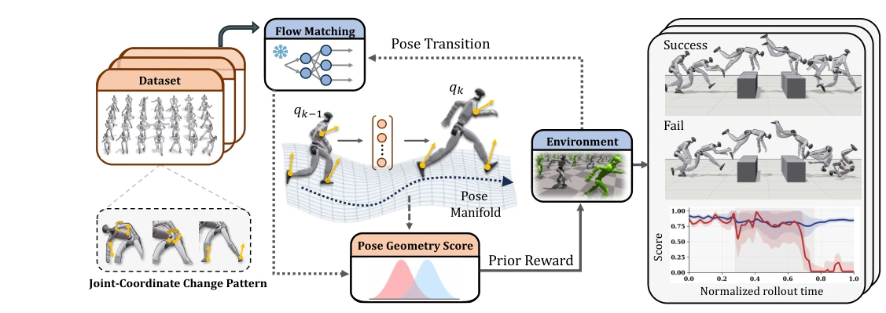
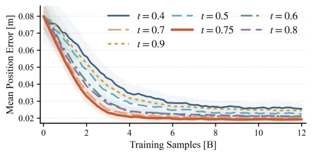
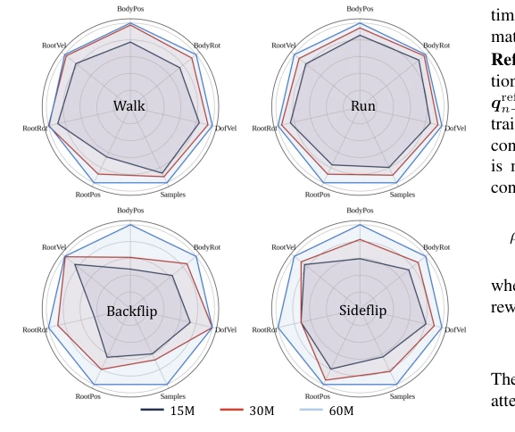
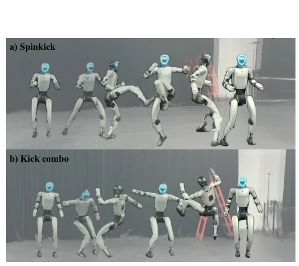
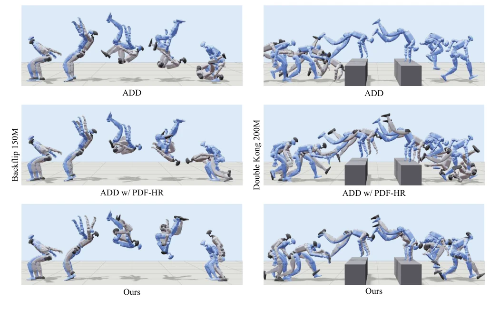
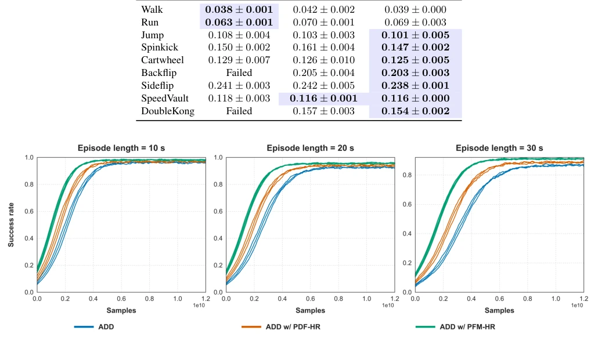
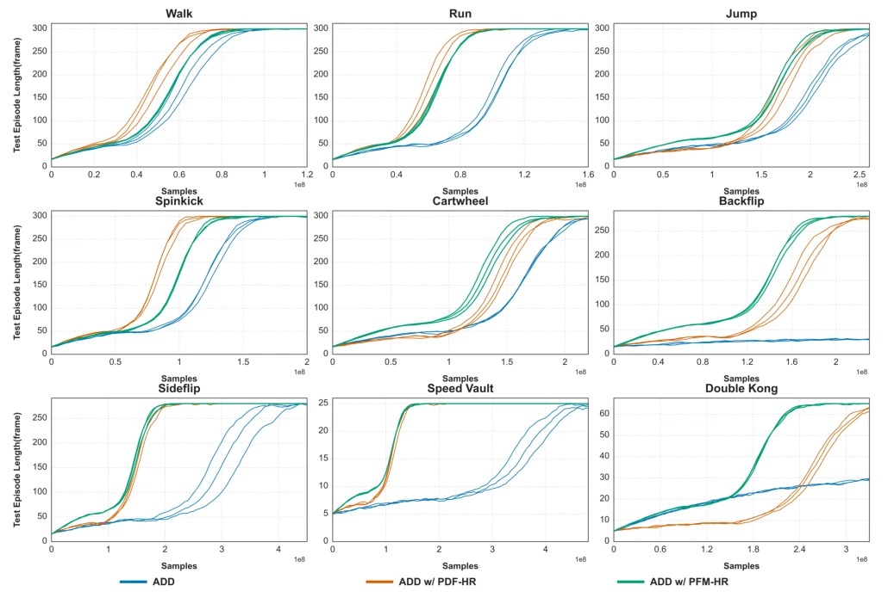

This paper adds another log of "flow matching" fuel to the embodied AI community. PFM-HR attempts to train a reusable Flow Matching prior using unordered pose data, addressing the issues that traditional temporal priors rely on ordered segments and pose priors ignore joint coordination. The PGS mechanism is quite clever, using the denoiser Jacobian to evaluate whether joint changes conform to the prior geometry. Experiments prove it is indeed stronger than PDF-HR on dynamic actions, but essentially it is still "static geometry" guiding "dynamic processes", and the lack of temporal logic is a fatal flaw. Although the authors emphasize "unordered", it actually relies on RL to explore temporal sequences, the prior is only responsible for "whether the pose is correct", not "whether the action is smooth". For teams pursuing extreme physical realism, this counts as a decent plugin, but do not expect it to directly learn complex temporal skills.
In humanoid robot motion tracking, reinforcement learning strategies often converge slowly due to difficulties in exploring high-dimensional control spaces. Existing Motion Priors are divided into two categories: temporal-based (e.g., SMP [20]) which require ordered segments and heavy inference; pose-based (e.g., PDF-HR [5]) which are reusable but ignore joint coordination changes. Discriminative priors such as DeepMimic [24] require joint training and have poor reusability. PFM-HR aims to fill the gap between efficient pose priors and heavy temporal priors, utilizing unordered data for training, providing joint coordination guidance while maintaining a frozen prior. Existing methods either cannot evaluate relative joint changes or rely on expensive temporal data, leading to poor tracking performance for dynamic actions (e.g., backflips).
The overall process is divided into two stages: offline prior training and online policy optimization. First, train an unconditional Flow Matching model on large-scale unordered pose data (BONES-SEED) to learn the pose marginal distribution. During policy training, the prior is frozen. The core innovation is Pose Geometry Score (PGS): at each step of rollout, calculate the joint coordinate change pattern (normalized joint-coordinate change) generated by the policy, and evaluate its alignment with the prior local geometry through the denoiser Jacobian. Specifically, use Jacobian-Vector Product to calculate the score, avoiding explicit construction of the Jacobian. The evaluation timestep is selected at 0.75 to balance sensitivity. Finally, calibrate using the PGS distribution of the reference trajectory, mapping the score to a reward modulation coefficient, enhancing rewards that conform to prior coordination patterns and suppressing weakly supported changes. This achieves geometry-aware guidance without temporal supervision and is computationally efficient.

Fig. 1: Overview of PFM-HR. PFM-HR learns a reusable Flow Matching pose prior from large-scale, unordered pose data and keeps it frozen during policy learning. The yellow arrows illustrate representative joint-coordinate changes between consecutive rollout poses, whose normalized pattern is evaluated by the Pose Geometry Score (PGS) through the prior’s local response. PGS then modulates the tracking reward to guide dynamic motion tracking.

Fig. 3: Sensitivity to the PGS evaluation timestep in general motion tracking. We report the position error during policy training, averaged over the 10, 20, and 30 s evaluation hori- zons, for different teval. Curves and shaded regions denote the mean and ±1 standard deviation over three seeds.
Experiments cover single trajectory (MimicKit 9 tasks), general tracking (LaFAN1 34 sequences), and real-world deployment (BeyondMimic). Baselines include ADD, ADD w/ PDF-HR. Metrics are sample efficiency (samples required for SR≥80%), position/rotation error. Results show that PFM-HR is significantly better than ADD and PDF-HR on dynamic actions (Backflip, Sideflip), with sample efficiency improved by 15%-30%. Real-world deployment verified compatibility. Ablation studies indicate 60M data scale is better than 15M, x-prediction is better than v-prediction. However, PGS is insensitive to temporal direction, and guidance weakens under extreme poses.

Fig. 2: Impact of prior-training data scale. Tracking perfor- mance across four representative motions using nested 15M, 30M, and 60M pose corpora. Metrics are min-normalized, with larger values indicating lower errors.

Fig. 4: Real-world deployment with PFM-HR. Motion tracking policies trained with PFM-HR execute diverse highly-dynamic whole-body motions on a humanoid robot.

Fig. 5: Qualitative comparison of motion tracking performance. The target reference motion is depicted by the blue humanoid, while the executed tracking behaviors produced by different methods are represented by the gray humanoids.

Fig. 6: Training curves for general-motion tracking on the 34-sequence LaFAN1 subset. The three panels report success rates for episode horizons of 10, 20, and 30 seconds, respectively. We compare ADD (blue), ADD with PDF-HR (orange), and ADD with PFM-HR (green). The horizontal axis denotes the number of training samples, and each curve corresponds to one of three independent random seeds. Higher success rates indicate that a larger fraction of the reference motion is tracked continuously.

Fig. 7: Training curves on nine single-motion tracking tasks. We compare ADD (blue), ADD with PDF-HR (orange), and ADD with PFM-HR (green). The horizontal axis denotes the number of environment samples, and the vertical axis reports the test episode length in frames, where a larger value indicates that the policy tracks the reference motion for a longer duration before termination. Each curve corresponds to one of three independent random seeds. The maximum episode length differs across tasks according to the duration of the corresponding reference motion.